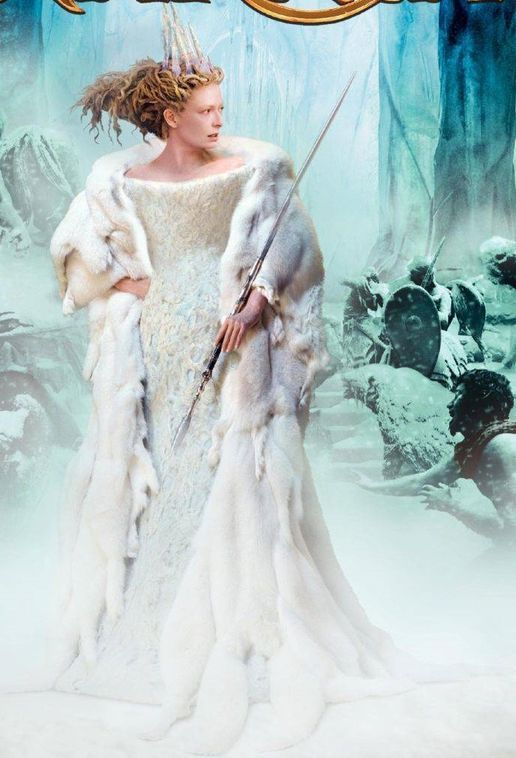
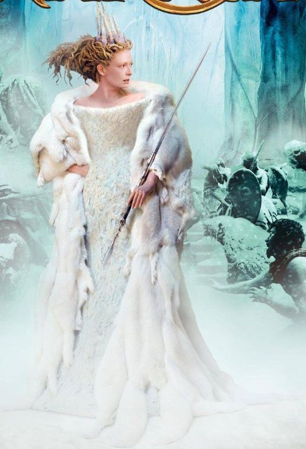

I Am
The King of Narnia
Welcome!
Aslan was the true King of Narnia who at the first moments spoke the words "Narnia, Narnia, Narnia, awake" and started a magical place in the first book. In the second book, he helps win the fight against King Miras. In the third book, he saves prince Cor from his enemies and guides him to his destination. In the fourth book, he leads an invasion against the Telemarines. In the fifth book, he shows Repicheep the way back to his country. In the sixth book, he succesfully brings Eustace and Jill into Narnia. He can be found in all of the books. In the last book, all of the magical animals lose faith that Aslan is even there anymore. Later, Aslan squeezes the Sun and everything becomes cold, to reveal that the Narnia thought to be real, was just an illusion and only those who truly have faith would be allowed to cross the doors.
Sayings
“This was the very reason why you were brought to Narnia, that by knowing me here for a little, you may know me better there." - Book 5 The Voyage of the Dawn Treader
"Well done, last of the Kings of Narnia who stood firm at the darkest hour" - Book 7 The Last Battle
“They have chosen cunning instead of belief. Their prison is only in their minds, yet they are in that prison; and so afraid of being taken in that they cannot be taken out." - Book 7 The Last Battle
“You doubt your value. Don't run from who you are.” - Book 4 Prince Caspian
"Narnia, Narnia, Narnia, awake. Love. Think. Speak. Be walking trees. Be talking beasts. Be divine waters." - Book 1 The Magician's Nephew
Actions


Flipcards
 
